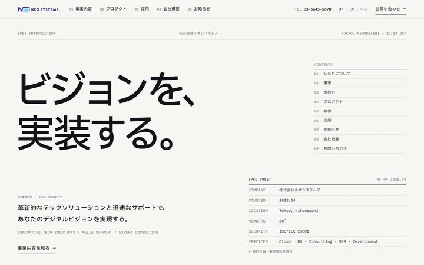
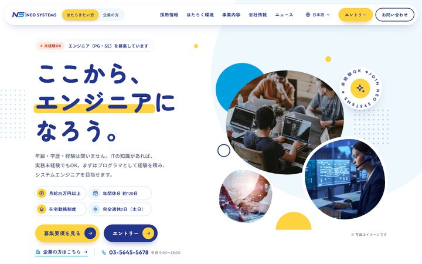
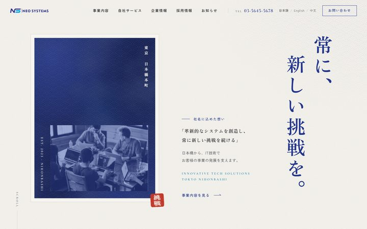
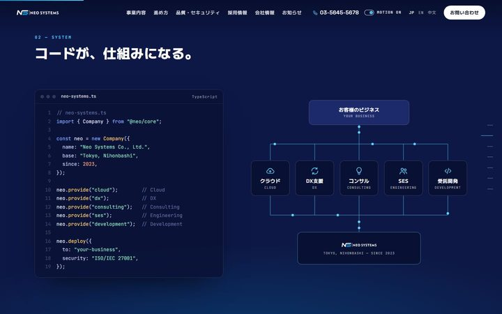
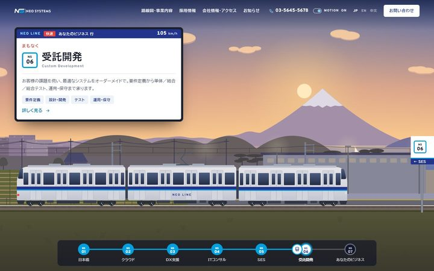

NEO SYSTEMS — SITE RENEWAL
デザイン方向性 モックアップ
トップページのデザイン案です。JP をメインに、EN・中文版は方向性が決まり次第作成します。（WordPress 実装前提）
 DIRECTION A王道・日本のコーポレート情報量の多い高密度レイアウト。電話番号・お問い合わせ導線を常時表示、カルーセル型バナー、月桂樹バッジ。ブランドのネイビー×シアン。
DIRECTION A王道・日本のコーポレート情報量の多い高密度レイアウト。電話番号・お問い合わせ導線を常時表示、カルーセル型バナー、月桂樹バッジ。ブランドのネイビー×シアン。 DIRECTION Bモダン・テックブランド大きなタイポグラフィと余白。ダークなヒーロー、リスト型の事業紹介、ベントーカード、スクロールアニメーション。ネイビー→シアンのグラデーションをアクセントに。
DIRECTION Bモダン・テックブランド大きなタイポグラフィと余白。ダークなヒーロー、リスト型の事業紹介、ベントーカード、スクロールアニメーション。ネイビー→シアンのグラデーションをアクセントに。 DIRECTION Cハイブリッド：信頼感 × モダン明るく余白のあるモダンなデザインに、日本のBtoBサイトの定番（ヘッダーの電話番号、ファーストビュー直下のお知らせ、お悩み→解決、FAQ、追従お問い合わせボタン）を組み合わせた案。
DIRECTION Cハイブリッド：信頼感 × モダン明るく余白のあるモダンなデザインに、日本のBtoBサイトの定番（ヘッダーの電話番号、ファーストビュー直下のお知らせ、お悩み→解決、FAQ、追従お問い合わせボタン）を組み合わせた案。 DIRECTION D王道・日本のIT企業サイト写真を使ったメインビジュアルと「信頼と挑戦」のキャッチ、大きな英字見出し、事業内容タイル、数字で見るネオシステムズ、企業情報インデックス。ロゴの「NS」の傾きをモチーフにした斜めのデザイン。
DIRECTION D王道・日本のIT企業サイト写真を使ったメインビジュアルと「信頼と挑戦」のキャッチ、大きな英字見出し、事業内容タイル、数字で見るネオシステムズ、企業情報インデックス。ロゴの「NS」の傾きをモチーフにした斜めのデザイン。
DIRECTION Eミニマル・エディトリアルモノクロに浅葱（シアン）1色だけのアクセント。IBM Plexの書体とグリッドで見せる、仕様書のように精緻なデザイン。番号付きの章立て、開閉式の事業一覧、更新履歴風のニュース。
DIRECTION F採用ファースト・ポップ明るい配色と丸ゴシックで親しみやすく。エンジニア採用を主役に、「はたらきたい方」「企業の方」の2つの入口、キャリアステップ、はたらく環境、社員の声（掲載イメージ）。
DIRECTION G和モダン・JAPAN BLUE（藍）ブランドの紺を「藍」、シアンを「浅葱」と捉えた和モダン。縦書きの明朝体、青海波・麻の葉の文様、屏風のような事業紹介、日本橋から始まるストーリー。
DIRECTION Hシネマティック動画を使わずHTML・CSS・SVGだけで描くオープニングと、スクロールで場面が進むストーリー（スクロールの乗っ取りなし）。コードが仕組みになり、夜明けとともにデプロイが進み、エンドロールで締めくくる。静止版にも切り替え可能。
DIRECTION INEO LINE ― 日本橋発の鉄道の旅スクロールすると電車が日本橋を発車し、5つの事業の駅に停まりながら、夜明けから夕暮れの終点「あなたのビジネス」へ向かう。景色はCanvas、車両はSVGでその場で描画（動画・画像なし）。車内LCDで各事業を紹介し、終点では乗車券型のお問い合わせ。静止版にも切り替え可能。